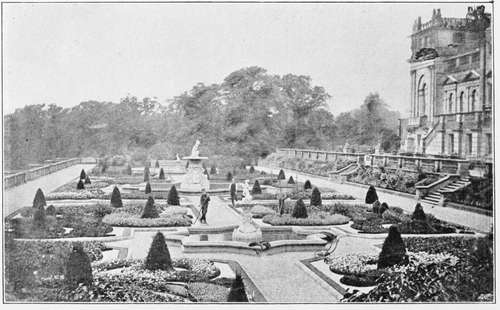
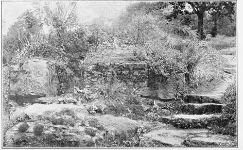

Nineteenth Century. Part 6
Description
This section is from the book "A History Of Gardening In England", by Alicia Amherst. Also available from Amazon: A History Of Gardening In England.
Nineteenth Century. Part 6
There is a very large folio volume by A. E. Brooke, in which are depicted what were then considered the finest gardens in England. † Most of them are Italian in design, and the beds are filled with these gaudy but perishable flowers. Among the number he illustrates may be mentioned Woburn, Worsley, Eaton, Trentham, Castle Howard, and Teddesley, designed by Nesfield, all laid out between 1845 and 1858. Sir Joseph Paxton, the well-known Editor of the Magazine of Botany, and gardener to the Duke of Devonshire at Chatsworth, was also the designer of the Crystal Palace Gardens, in a pseudo-Italian style, for which he was Knighted. The taste must not be judged from this crude and uninteresting example, as many charming gardens of a stiff Italian design exist- Besides those already quoted, Harwood is a fine example. It was planned by Lady Harwood, and the designs for the fountains and stone balustrades were made by Sir Charles Barry. Shrublands* was begun to be laid out by Sir William Middleton about 1830. There is in front of the house at Shrublands a wide terrace with flower-beds like that at Harewood, but without fountains, from it a long flight of steps leads to a semi-circular terrace garden below (see illustration). This, like all gardens in this style, was formerly " bedded-out" each summer. It is easy to see what an immense expense this involves, and how difficult it was to keep up a garden under those conditions. For unless the beds are to be empty except for four months in the year, there must be spring bedding of hyacinths, crocuses, tulips, etc, as well as geraniums, and such like, for the summer.
* Essay on Landscape Gardening. By Richard Morris, 1825. † Gardens of England. By A. E. Brooke, 1858.
HAREWOOD.
There are now in cultivation such an immense variety of hardy perennial plants, which, with a little care, will thrive well in this country, that if a judicious selection is made from these, the beds can be made as bright in summer as with the more delicate plants which perish with the first touch of frost ; and the beauty of the garden can be considerably prolonged. By planting such things as violas or " tufted pansies," a mass of colour from early spring until late autumn can be obtained. The garden at Shrublands has been thus arranged, according to the suggestions of Mr. W. Robinson, with great success. The beds are filled with roses, pinks, and carnations, and many hardy plants, the masses of colour being skilfully arranged. One bed, shown in the illustration, is composed of Lobelia cardinalis in the centre with a border of Centaurea ragusina, which makes a striking effect until late in the year. This bringing back to our gardens the numerous hardy plants which were banished, and in many cases ruthlessly torn up and thrown away when the rage for " bedding-out" came in, is the greatest improvement of the end of the nineteenth century. They are once again holding their proper place, and with all the new species which every year come to swell the list of things which will endure our cold climate, more lovely effects could be produced than ever were possible with the stiff bedding plants of forty years ago. But no one would wish to discard altogether these half hardy things ; our green-houses, a blaze of bright colours with tuberous Begonias, or some such flowers, are a wonderful sight, and even from a practical point of view it is a good plan to make room in the houses, by planting out some of these things in the summer. Very different is this arrangement from devoting all the glass to nurture up geraniums to fill the whole garden. Bacon's aim was to have flowers in the garden during every month of the year, and in his essay he mentions some for each successive season. Surely after a lapse of three centuries we ought to be able to attain that object and arrange that no month should be without its brightening flowers.
* In Suffolk, belonging to Lord de Saumarez.
Shrublands.
" The daughters of the year One after one through that still garden passed, Danced into light and died into the shade".
Among the many plants which have been introduced of late years the class of Alpines has been very largely represented. We now possess an immense variety of plants whose natural place of growth is on rocks, or between the crevices of stones. It is only reasonable to try and give these plants, as nearly as possible, the same conditions of life here in England as on their native hills. The result of this has been the formation of several rock gardens, very different from the old-fashioned pile of stones which went by the name of a rockery. These new rock gardens are in every way successful, as rare Alpines, which it was thought almost impossible to grow in this country, are now made to thrive. The illustration of a typical rock garden is a part of the very large one at Batsford (Gloucestershire), made by Mr. Mitford within the last few years. The one at Kew is a well-known example. Every year there are new things of interest there. It is wonderful to see plants from nearly all the mountain ranges of the world perfectly at home within a few miles of the City of London.
Another development of gardening during the last few years has been sub-tropical gardening. Mr. Robinson has kindly pointed out to me that this kind of gardening, which came to us from Paris some twenty years ago, did something to relieve the formality of " bedding-out," although not nearly as important an improvement as the newer movement towards hardy flowers. Groups of Cannas, Caladiums, and such like, in beds, help to render them less stiff. There can also be obtained fine results from planting out the hardier kinds of tree ferns and palms during the summer months. But the best kind of sub-tropical garden is the permanent one. Even in the coldest districts of England, numerous plants will grow which give a tropical appearance.* In Norfolk and Suffolk, where the late frosts are most trying to gardeners, various bamboos will flourish ; Bambusa meteke, Simonii, viridiglaucescens, and edulis are perfectly hardy, and besides these many things such as Berberis, Aralias, Gunnera scabra, Aristolochias, giant Heracleums, Arundo Donax, several species of Rhus and Spirea, Polygonum cuspidatum, Tamarix, Yuccas, Polygonatum multiflorum, Solomons seal, Bocconia cordata, and several sorts of Acanthus, besides taller trees, such as the Ailanthus glandulosa, and Japanese maples ; these when grouped on grass with smaller ferns and grasses, produce a very tropical effect. Green gardens composed of such things would be a pleasant variation from the brighter flowering plants. In the warmer districts of England this could be more easily accomplished. Some of the hardier palms do well and appear almost at home among the familiar English trees.
Rock garden, batsford.
Continue to: